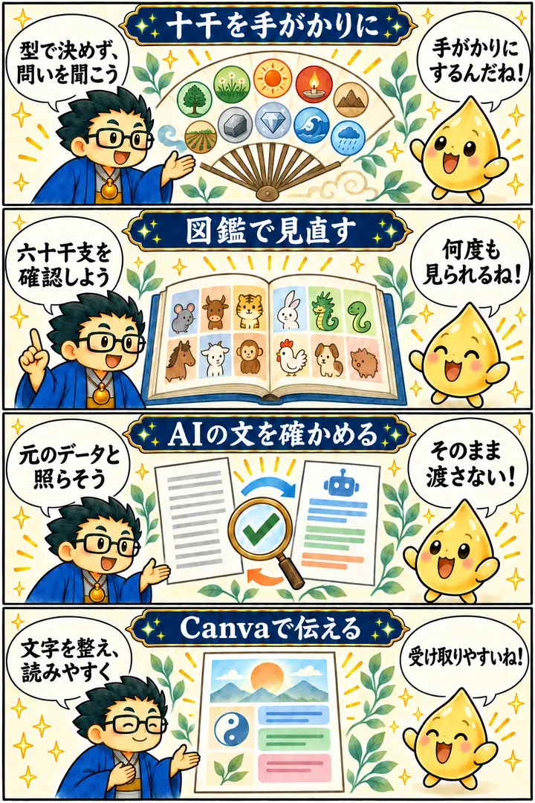

第3期 Zoom講座・第5回
占い師×AIの時代！AIとCanvaを活用した鑑定書の作り方
この回の要約
占いの資料を、相手に伝わる鑑定書へ。アプリ・AI・Canvaは補助に使い、内容の確認は人が行う。
十干・六十干支などを図鑑で確認した後、インド占星術アプリの出力をもとに鑑定書を作る流れを実演しました。AIの文章や画像をそのまま渡さず、元データ・言葉遣い・個人情報を確かめ、Canvaで読みやすく整えることが今回の実践です。占術上の性格や未来の読みは講師の解釈であり、客観的な確定事項ではありません。
4コマ漫画でつかむ

タイムスタンプ
時間を押すと、上の動画がその場面から再生されます。
覚えておきたいこと
- 十干・六十干支などの分類は、本人に尋ねるための手がかりとして使う。
- アプリの表示、占術上の解釈、相手に伝える提案を混同しない。
- AIの文章・画像には誤りがあり得る。元データと照合してから使う。
- Canvaでは見た目の華やかさより、相手が読めて理解できることを優先する。
- 個人情報や未来の断定を安易に入力・掲載せず、最終責任は作成者が持つ。
復習ポイント
講義内の占術上の説明・時代の読み・象徴的な解釈は、講師の見立てです。客観的な事実や将来を保証するものではありません。